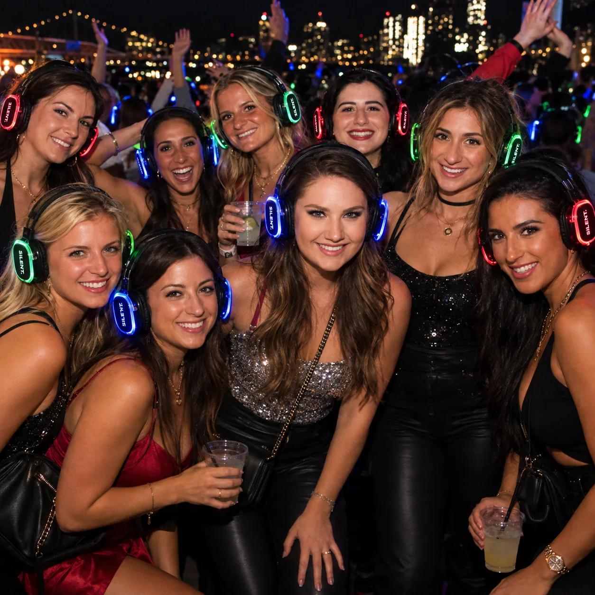
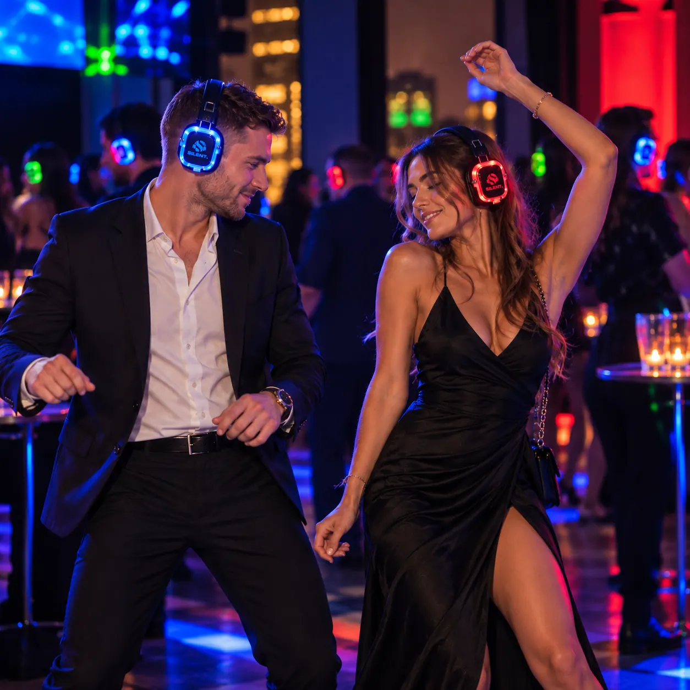
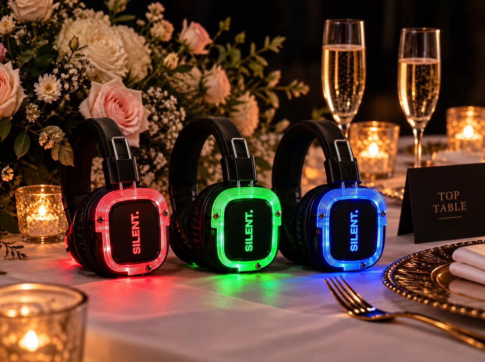
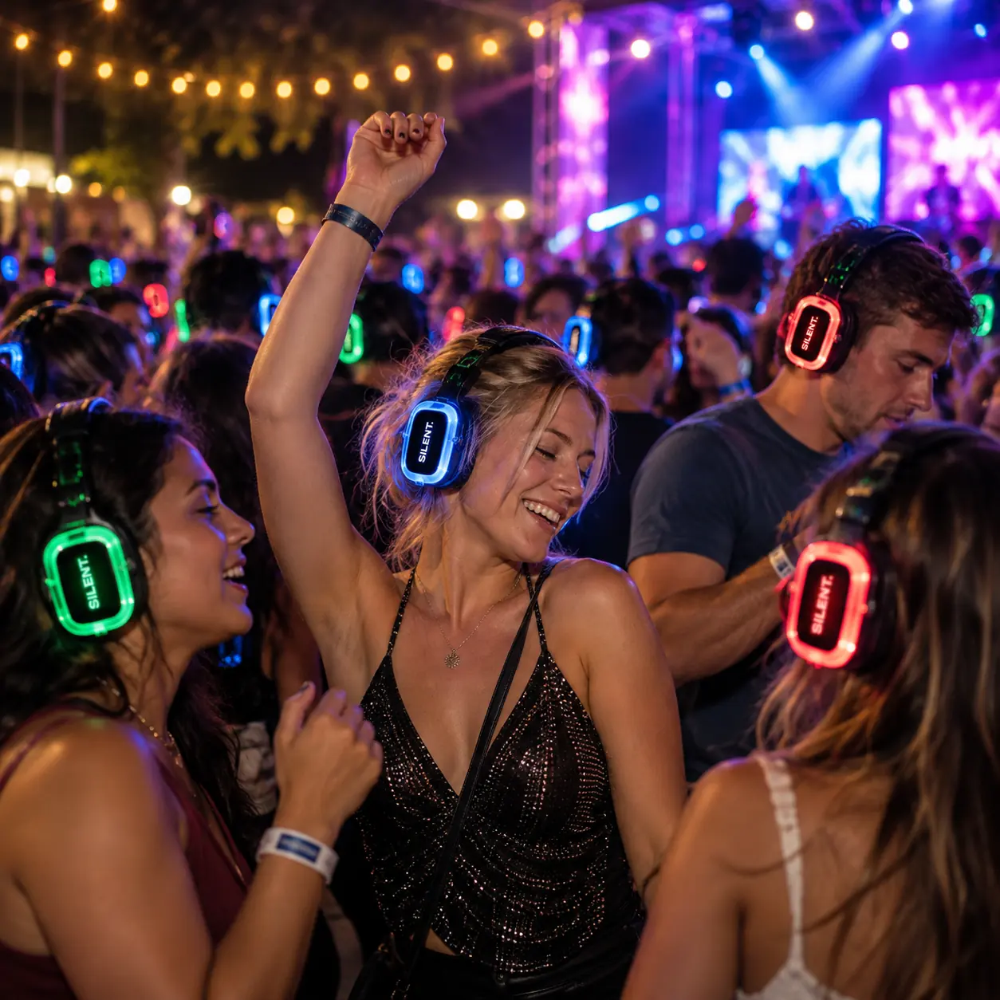

01Experience first
Experience first
We start not with the equipment but with what people should feel. That's why we look for new ways to make familiar event formats more interesting: with interactivity, play and unexpected moments.
Home About us
Be different.
Be together.
We create new possibilities for events with wireless audio technology, so that everyone can choose their own, discover new experiences and stay part of a shared moment.
Our formatsEveryone has their own rhythm, their own tastes, their own idea of the perfect moment. We believe shared experiences don't require sameness.
SILENT lets you choose your own audio channel, music and way of interacting while staying in the shared space of the event.
We are inspired by the idea that technology doesn't have to pull people apart but can help them find more ways to be together.

Silent Disco — the technological foundation of SILENT, but not the limit of what we can do.
We help organise events in which wireless headphones become a tool for new experiences: from parties and celebrations to festivals, camps, youth meetups and other formats.
It's a chance to rethink the familiar event scenario, add interactivity and create a space where different people can find something of their own.
Different musical tastes shouldn't divide people. Everyone picks their own channel while remaining part of the shared event.
Familiar gatherings can open up in a new way. Silent Disco adds interactivity, play and unexpected emotions to events.
One format can become the basis for a disco, a team game, a themed evening or another activity adapted to a specific event.
We help choose the format, prepare the equipment and organise the technical side according to the agreed terms.
Every event has its own character. That's why we start not with the equipment but with understanding what exactly you want to create.
We discuss the event format, the number of participants, the location and your expectations.
We agree the equipment, the scenario of use and the technical details.
We organise delivery, installation and preparation of the equipment according to the agreed package.
We provide the technical support agreed for the event.
We start not with the equipment but with what people should feel. That's why we look for new ways to make familiar event formats more interesting: with interactivity, play and unexpected moments.

We respect different preferences. Every guest picks their own channel and way to take part, and togetherness doesn't require everyone to listen or have fun in the same way.

Thoughtful organisation, clear agreements and attention to the client's needs matter to us as much as the technology itself. Guests may not notice these details, but they are what holds an event together.

An unusual format shouldn't mean complicated organisation. We set up the equipment and explain to guests how everything works so that they quickly feel part of the event.
Our vision
We see the future of SILENT as the development of new event formats, where technology opens up more room for interaction, creativity and freedom of choice.
We aim to develop an event culture in which people can be different and still stay together.
By using modern technology we rethink familiar events and create new experiences, changing not only what you hear but also how you interact with and feel each other.
Have an idea for an event? Tell us about it. Together we will find a SILENT format that helps bring your plan to life.
Let's create something special together.
Discuss the format